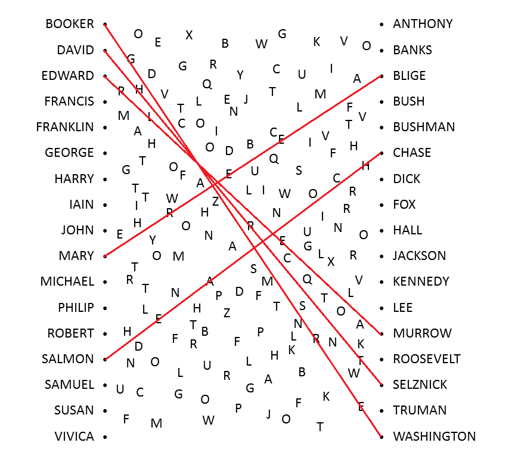
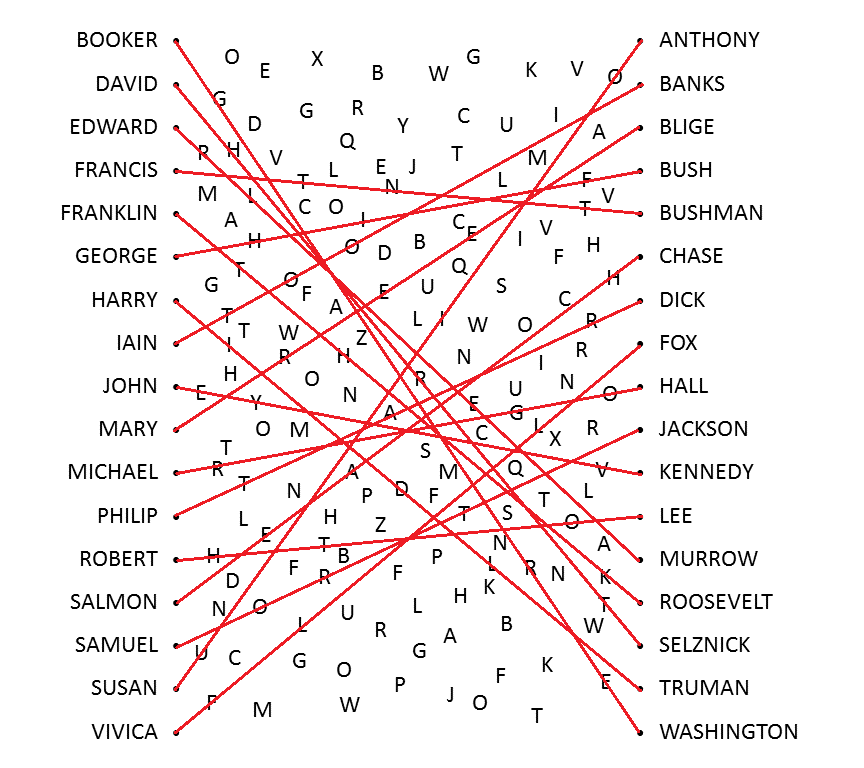

We have a list of names in the left column and a list of names in the right column. Let's try doing what's obvious and connect them! Many of the names are pretty generic, but a few are uncommon; there's more or less only one notable BOOKER, SALMON, BLIGE, MURROW, or SELZNICK.
Each of the lines we drew overlaps exactly three letters. That's not ideal--best case would be if each line crossed exactly one letter, so it's obvious how to extract the answer--but the fact that they all cross the same amount suggests we're on the right track.
The next a-ha is to realize that all of the people we've used so far have a middle initial commonly included as part of their name (Booker T. Washington, Salmon P. Chase, Mary J. Blige, Edward R. Murrow, David O. Selznick). With that in mind, we can place more connections, such as Samuel L. Jackson and Susan B. Anthony. Eventually we can connect all of the names. (Some of the individual names have multiple options--Michael J. Fox is probably more notable than either Michael C. Hall or Vivica A. Fox, but they're in the puzzle and he's not--but there should be only one way to use all of the names exactly once.)
What's next? Well, we have a set of celebrities, each associated with a trigram. We haven't used the fact that these people all have middle initials, though, and looking it over, those middle initials are unique. That suggests the next step will be to order the trigrams by the middle initial.
| VIVICA A FOX | F | L | L |
| SUSAN B ANTHONY | U | I | O |
| MICHAEL C HALL | R | G | O |
| FRANKLIN D ROOSEVELT | T | H | K |
| ROBERT E LEE | H | T | O |
| JOHN F KENNEDY | E | Y | V |
| MARY J BLIGE | R | E | E |
| PHILIP K DICK | T | A | R |
| SAMUEL L JACKSON | O | R | T |
| IAIN M BANKS | T | O | O |
| DAVID O SELZNICK | H | R | T |
| SALMON P CHASE | E | A | H |
| EDWARD R MURROW | R | L | E |
| HARRY S TRUMAN | I | D | L |
| BOOKER T WASHINGTON | G | R | E |
| GEORGE W BUSH | H | I | F |
| FRANCIS X BUSHMAN | T | N | T |
Given that this puzzle's all about middle initials, the answer phrase is found by reading down the central column: LIGHTYEAR OR ALDRIN, giving BUZZ. (If you didn't guess to read the central column, the left and right columns both have messages to that effect.)